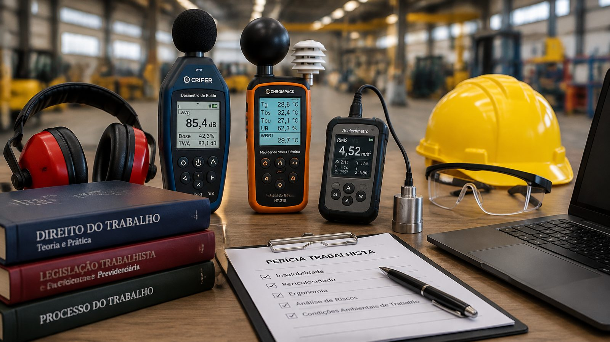

Assistência Técnica Trabalhista
Acompanhamento completo de todo o processo, em perícias de insalubridade e periculosidade.
Da análise do processo à manifestação sobre o laudo, em sete etapas.
-
Etapa 1
Envio do processo
Análise do processo na íntegra.
-
Etapa 2
Análise de viabilidade técnica
Objeto da perícia, pontos controvertidos entre as partes e agentes envolvidos.
-
Etapa 3
Elaboração de quesitos
Quesitos que conduzem o perito à metodologia correta e à constatação dos fatos.
-
Etapa 4
Preparação da parte
Orientação quanto aos documentos a apresentar, às pessoas e locais disponíveis na vistoria e à dinâmica pericial.
-
Etapa 5
Acompanhamento presencial
Presença in loco e apresentação de quesitos suplementares, quando necessário.
-
Etapa 6
Elaboração de parecer técnico
Parecer técnico com os pontos relevantes da diligência pericial.
-
Etapa 7
Análise do laudo pericial
Concordância ou impugnação técnica ao laudo pericial, ponto a ponto.
Perícia designada e ainda sem Assistente Técnico?
O laudo pericial pesa muito na sentença. Não fique sem respaldo técnico.
Como atuamos
Perita do Juízo e Assistente Técnica das partes
Estratégia processual garantindo rigor técnico e clareza ao Juízo.
Atuação como perita nomeada pelo Juízo ou como Assistente Técnica de trabalhadores e empresas em processos trabalhistas. A análise parte dos autos e dos documentos de SST (PGR, LTCAT, PCMSO, PPP, fichas de EPI), passa pela vistoria no local de trabalho e se apoia nas NR-15 e NR-16, com linguagem técnica e clara.
Tem dúvidas quanto à viabilidade técnica?
Envie sua dúvida- 01
Insalubridade e Periculosidade
Assistência técnica de engenharia em perícias trabalhistas de insalubridade e periculosidade.
- 02
Avaliações Ambientais de agentes nocivos
Avaliação de agentes físicos, químicos e biológicos e enquadramento normativo.
- 03
Proteção e Documentos de SST
Análise de fichas de EPI e de EPC e revisão de PGR e LTCAT, como apoio à defesa no processo.
- 04
Base Normativa
Trabalho técnico fundamentado nas Normas Regulamentadoras aplicáveis e nas demais normas complementares.
Tem uma perícia trabalhista designada no seu processo?
A análise inicial do processo é gratuita e feita por profissional habilitado.